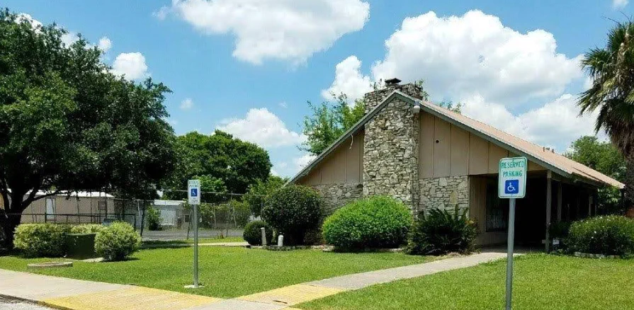
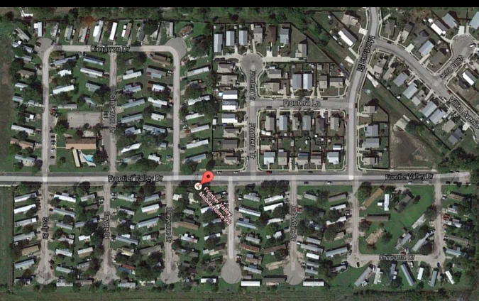
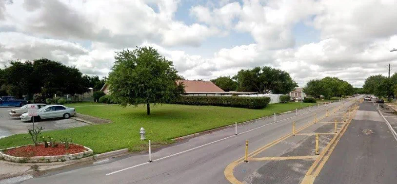
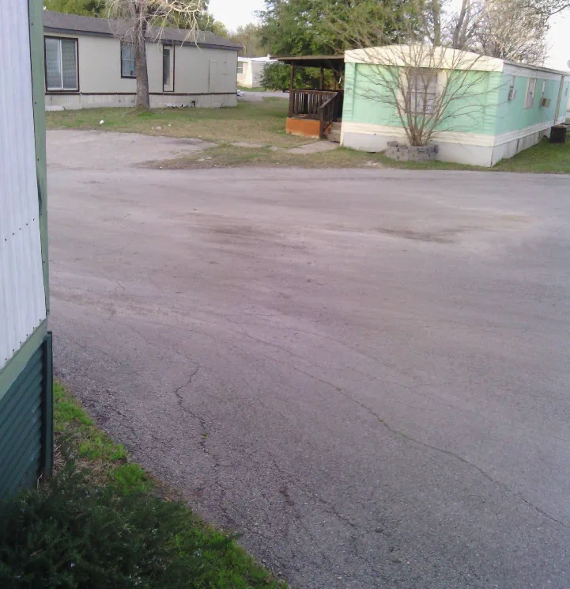

Affordable, and still in Austin
One of the more affordable ways to have a home and a yard inside the city, in a neighborhood that has stayed lived-in and real while the rest of Austin changed.

Mobile home community · Southeast Austin
Frontier Valley has been home to Austin families since 1973. Shade trees, quiet streets, a clubhouse, and an office right on site, six miles from downtown and minutes from the airport.
Why neighbors stay
Frontier Valley is the kind of place where people put down roots and stay. Here is what neighbors point to.
One of the more affordable ways to have a home and a yard inside the city, in a neighborhood that has stayed lived-in and real while the rest of Austin changed.
An on-site management office, ongoing repairs and upkeep under current management, and neighbors who keep the streets clean and quiet. As one long-time resident put it, "Well managed. Clean. Well kept."
Set along the Colorado River between Highway 71 and 183. You are six miles from downtown, minutes from the airport, and a short drive to Roy Guerrero Metro Park and the river trails.
Around the community
An established community in the Montopolis area, with mature shade, a clubhouse, and easy reach to the rest of the city.



From the neighbors
In their own words, pulled from public Google reviews.
Very well managed. Clean. Well kept. Good manager.
Delwin Goss
A pleasant and peaceful place. Far away and close at the same time.
Arturo Sanz
Zero danger, very friendly people.
Judith Velazquez
It's a great area to live at and it's nice.
Armando John Anaya
I grew up here. I just love this neighborhood.
Maria D. Peru
Under new management, finally seeing repairs being made and things being added.
drew lyon
About Frontier Valley
Frontier Valley is a community of 154 home sites off Frontier Valley Drive in the Montopolis area, first opened in 1973. It sits along the Colorado River with mature shade trees, a community clubhouse and pool, and a management office on site.
It remains one of the more affordable ways to have a place of your own inside the city, close to downtown, the airport, and the river parks.